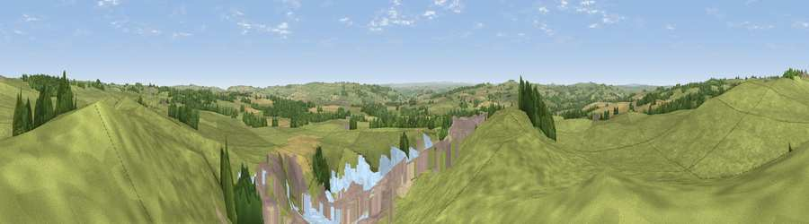

Viewpoint near Gunnerton
#17824 in England · top 40% of its area beats it · near GunnertonThe view, rendered

A 360° render of this exact spot computed from the terrain model, tree cover and land cover — summer colours, afternoon light, calibrated against photographs of famous viewpoints. Real trees, hedges and buildings will differ in detail.
The panorama
Grey silhouette: terrain skyline in each direction (720 bearings, Earth curvature and refraction included). Dashed green: skyline with trees (+15 m) and buildings (+8 m) as obstacles. Blue strip: how far the ground is visible on each bearing.
Where the view opens
Wedge length = distance to the farthest visible ground on that bearing (vegetation-aware). Rings at 10, 25 and 50 km.
What fills the view
73% grassland · 7% woodland · 7% cropland · 7% built-up · 4% water · 2% bare ground
Angular shares of the visible panorama (visual magnitude), not map area. Landscape diversity 0.43 (0–1 Shannon).
Key numbers
More beautiful places nearby
The staircase of upgrades: each row has a higher view potential than everything closer. Driving times are estimates from straight-line distance, calibrated against real road routing — check an actual route before setting out.
| Place | Direction | Drive | Score |
|---|---|---|---|
| Viewpoint near Gunnerton | NNW · 1 km | ~2 min | 55.6 |
| Viewpoint near Walwick | SW · 5 km | ~11 min | 62.8 |
| Viewpoint near Chollerford | SSE · 5 km | ~12 min | 65.3 |
| Viewpoint near Chollerford | SSE · 6 km | ~13 min | 67.5 |
| Viewpoint near Fourstones | S · 7 km | ~15 min | 71.4 |
| Viewpoint near West Woodburn | N · 9 km | ~18 min | 73.4 |
| Darden Rigg | NNE · 22 km | ~37 min | 77.0 |
| Viewpoint near Thropton | NNE · 26 km | ~41 min | 81.8 |
55.07142, -2.13034 · source: screening · position refined by local search. Computed location — check access rights before visiting.